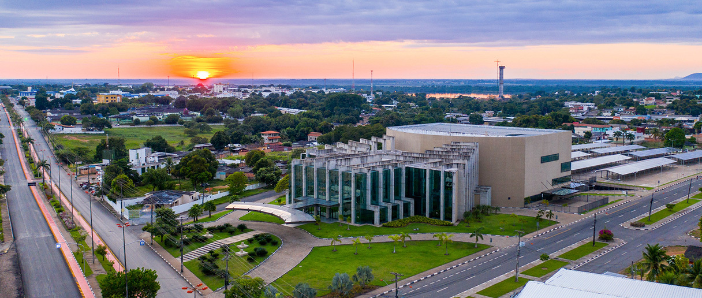

Roraima é um estado localizado na região Norte do Brasil, com uma população de cerca de 631 mil habitantes. Sua capital é Boa Vista, uma cidade moderna e cheia de cultura. Entre os principais pontos turísticos de Roraima estão o Monte Roraima, uma das formações mais famosas e impressionantes do mundo, que atrai muitos aventureiros e turistas, o Parque Nacional do Monte Roraima, que protege essa paisagem única, e as cachoeiras e áreas de floresta que oferecem contato com a natureza exuberante da região. Quanto ao governador atual, até outubro de 2023, o governador de Roraima é Antonio Denarium.
